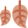
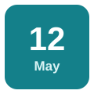

spring
الربيع
Flowers bloom in spring.
تتفتح الأزهار في الربيع.
Seasons & Special Dates
مرّر الماوس على السماعة أو اضغط عليها لتسمع النطق. السماعة الكبيرة نطق أمريكي (وهو المكتوب بالرموز)، وزر UK نطق بريطاني.
الربيع
Flowers bloom in spring.
تتفتح الأزهار في الربيع.
الصيف
We spend the summer by the sea.
نقضي الصيف بجوار البحر.

الخريف (بريطانية)
The leaves turn red in autumn.
تتحول الأوراق إلى الأحمر في الخريف.
الخريف (أمريكية)
We moved to Boston last fall.
انتقلنا إلى بوسطن الخريف الماضي.
الشتاء
It rarely snows here in winter.
نادرًا ما تثلج هنا في الشتاء.

تاريخ
What's the date today?
ما تاريخ اليوم؟
عيد ميلاد
Happy birthday! Have a great day.
عيد ميلاد سعيد! أتمنى لك يومًا رائعًا.
ذكرى سنوية
Today is our tenth wedding anniversary.
اليوم الذكرى العاشرة لزواجنا.
عطلة
Monday is a public holiday.
الاثنين عطلة رسمية.
إجازة (أمريكية)
I'm taking a week's vacation in July.
سآخذ إجازة أسبوع في يوليو.
رأس السنة
We celebrated New Year with our friends.
احتفلنا برأس السنة مع أصدقائنا.
مهرجان / عيد
The film festival takes place every autumn.
يقام مهرجان الأفلام كل خريف.
ستسمع كلمة من كلمات الصفحة، فاضغط على الصورة التي تعبر عنها.
الكلمات المميزة هي كلمات هذه الصفحة. اضغط على أي كلمة ليبدأ الصوت منها ويكمل ما بعدها.
Which do you like more, summer or winter?
أيهما تفضل أكثر، الصيف أم الشتاء؟
Neither! I love spring, when the whole city smells of flowers.
ولا أيهما! أحب الربيع، حين تفوح المدينة كلها برائحة الزهور.
I prefer autumn. Or, as my American friends say, fall.
أنا أفضّل الخريف. أو كما يسميه أصدقائي الأمريكيون fall.
Are you visiting them this year?
هل ستزورهم هذا العام؟
Yes. I've saved two weeks of vacation for the trip. What's the date of your sister's wedding?
نعم. ادخرت أسبوعين من الإجازة للرحلة. ما تاريخ زفاف أختك؟
It's on June 3rd, which is also my parents' wedding anniversary.
في 3 يونيو، وهو أيضًا ذكرى زواج والديّ.
How sweet! And isn't your birthday around then?
يا له من أمر جميل! أليس عيد ميلادك في ذلك الوقت تقريبًا؟
It's a week later. And then there's the public holiday, so it's a very busy month.
بعد ذلك بأسبوع. ثم تأتي العطلة الرسمية، لذا فهو شهر مزدحم جدًا.
Will you come to the music festival with us?
هل ستأتي معنا إلى مهرجان الموسيقى؟
I'd love to, but let's first plan our party for New Year!
يسعدني ذلك، لكن لنخطط أولًا لحفلة رأس السنة!
الكلمات المميزة هي كلمات هذه الصفحة. اضغط على أي كلمة ليبدأ الصوت منها ويكمل ما بعدها.
Every part of the year has its own beauty and its own special days. In spring the trees turn green and the air feels fresh. The summer is long and hot, so most families take a vacation by the sea. Then autumn arrives, with cool winds and golden leaves. Americans call this season fall, because that is what the leaves do. Winter brings short days and cold nights, and we stay at home more. People also mark the year with celebrations. We remember the date of each birthday and each wedding anniversary, and we look forward to every public holiday. Our town holds a food festival in October, and thousands of visitors come. At the end of December, we all stay up late to welcome the New Year with fireworks.
لكل جزء من السنة جماله وأيامه الخاصة. ففي الربيع تخضرّ الأشجار ويصبح الهواء منعشًا. والصيف طويل وحار، لذا تقضي معظم العائلات إجازتها بجوار البحر. ثم يأتي الخريف برياحه الباردة وأوراقه الذهبية. ويسمي الأمريكيون هذا الفصل fall، أي «السقوط»، لأن هذا ما تفعله الأوراق. ويأتي الشتاء بأيامه القصيرة ولياليه الباردة، فنبقى في البيت أكثر. ويحتفي الناس أيضًا بأيام السنة. فنتذكر تاريخ كل عيد ميلاد وكل ذكرى زواج، ونتطلع إلى كل عطلة رسمية. وتقيم بلدتنا مهرجانًا للطعام في أكتوبر، فيأتي آلاف الزوار. وفي نهاية ديسمبر نسهر جميعًا لاستقبال رأس السنة بالألعاب النارية.